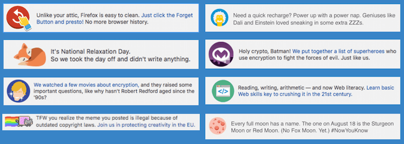

Snippets: localizing, testing and creating your own
What is a snippet?
A snippet is a small and often interesting piece of news, information or conversation. It is a type of in-product communications (IPC) channel that the Engagement team uses to deliver messages directly to Firefox users, to drive usage, inform about ongoing campaigns and initiatives, and build brand loyalty.
These are some examples of the subjects used in snippets: product launches, new features, Mozilla Foundation content like yearly donations, Mozilla Foundation Advocacy campaign, Mozilla content, user tips, celebration of special days, etc. In a given month, the team has the opportunity to create up to 3 billion media impressions through snippets. Mozilla uses them for all sorts of purposes, to educate, inform, celebrate and delight.
This is what a snippet looks like on Firefox browser:

Which locales are supported?
Currently only eight locales are supported by the team on a regular basis. They are: cs, de, es, fr, id, pt-BR, ru and zh-TW. Recently, the team also tested out RTL languages: ar, fa, he and ur. The process is entirely manual, thus it is not scalable to expand to other locales, at least not on a regular basis. See section below on how to make a special request for locales not on this list.
How often are localized snippets requested and where is the project available?
Snippets usually come on a monthly basis. Normally there is a lead time of 10-14 days between the request and the snippets being available in Firefox. Occasionally there are special requests outside of this cadence to support a product or feature launch for a particular market.
Localizable files can be found on Pontoon under the Engagement project.
Guidelines on localizing snippets
- Follow the snippets guidelines when localizing snippets. The tone should be QUAC (Quick, Untamed, Alert, Clever).
- Do not translate it, localize it! Usually the English copy is full of cultural references that may not apply to your local culture and is targeted to the wrong audience. Try to capture the essence of the message and make it relevant to your market.
- Read the comments for some messages that provide info on context, type of campaign and length limitation of the message.
- Collaborate with other community members. You may come up with something better than working alone.
- Check for spelling and grammatical errors. Snippets have short life cycle. Get it right before it reaches millions of users.
- Do not rush to complete the work and then never look at it again. Think through for few days before you consider it final.
- Report localizability issues on Bugzilla during the localization process. Issues include but not limited to: icons, character length, cultural or country relevancy, appropriateness, timing when a snippet is used. The snippets team will evaluate these issues and skip a snippet for a locale at a given launch altogether.
- Check due date of the task. Snippets is high priority and time sensitive.
Where and when to test snippets?
Currently, there is no staging server for localizers to preview the snippets or layout before they are scheduled to go live.
Snippets usually go live as soon as a day after the due date, or as late as a few weeks later because they are scheduled against other priority messages.
To see snippets, type about:home in the Awesome Bar, the current running snippets will be on display. A snippet can run between 4-7 days. Sometimes a set of snippets rotates within a given time frame, in other cases one snippet runs for a few days before it is replaced by another one.
Take a peek of the currently running and scheduled snippets. It shows the country, the message and the schedule of a snippet.
If you spot a mistake in a snippet, file a bug to the team right away. Specify language, current content, suggested correction, severity of the problem or the reason it is incorrect. And preferably, attach a screenshot.
FAQ: process to make a special snippet request
Even if your locale is requested on a monthly basis, you are welcome to come up with your own content that better fits your culture, country or language.
If your language is not listed above and you would like to have a snippet created for special occasions, such as new product or feature launch, a major holiday or campaign, please follow these steps.
How to create a good snippet?
Leverage what is already written and localize it
If creating your own content is challenging, feel free to leverage what was created by the snippets team. Browse through the snippets written this year so far, you may find a message that resonates to your particular market, product, feature launch or campaign.
Create your own
Writing snippets takes a lot of effort. Follow the same guidelines that the snippets team adhere to.
Snippets should be to the point. Try writing your snippet then cut it down until you are left with a sentence that is quick, clever and delightful. A good snippet copy has a few of the following qualities and characteristics:
- Tangible: quality that can be easily measured.
- Length: the ideal snippet is between 80 and 130 characters. Think of a tweet, omit needless words.
- Readability: short concise words worked for Hemingway, they’ll work just fine for you. Keep the 3 syllable words and technical jargon to a minimum.
- Call to action - CTA (Occasional): you don’t always need to blatantly tell people what to do, but sometimes you do.
- Grammar: do your best to catch mistakes, there is a chance that all checkpoints will miss it but 100 million people surely won’t.
- Support graphic: all simple snippet copy is accompanied by an icon. Your icon and copy should work in unison. Select the icon from this gallery (need to request for access) that best supports the message. Here are some examples of matching the graphics with the tones of the messages.

-
Intangible: quality that is recognized but difficult to quantify.
- Quick: get to the point with short words and sentences.
- Clever: find humor, irony and wordplay. Reference modern life.
- Alert: ready to offer tips, advice and guidance like a trained concierge.
- Untamed: be quirky. Do and say things no other brand would.
In addition to the guidelines mentioned above in terms of localizing a snippet, it is very important that this is the result of a team collaborative effort. The proposed snippet should come in both target language and in English so the snippets team can understand what is being conveyed.
Try to submit multiple variant snippets of the same message, or multiple snippets of different messages if you can, to lower the chances of having some snippets rejected.
Can I use external icons and URLs in my snippet?
You can pull icons from the Firefox emoji bank by specifying the icon number. This is the recommended list of icons to choose from.
If you can’t find anything in the bank that fits, you can suggest icon ideas or even attach a custom icon that respects the guidelines. Suggesting new icons will increase review and approval time.
Unless specified, the only non-Mozilla pages we can link to from snippets are Wikipedia pages.
File a request
Once a snippet is formalized, you can file a Snippets bug request for review and approval. Specify the language, provide copy of the message in target language and in English as reference and choice of icon, suggest preferred timeline to run the snippet. Make sure to include a link to use in the proposed snippet.
What is the lead time for a snippet request?
The team needs a minimum of two weeks if snippet needs to appear in language other than English in your country. This assumes that the snippet doesn’t require much revision.
What is the typical snippet review cycle for approval?
Review process takes about a week. LCM (Life Cycle Management) team needs to approve the snippet before it moves to the Firefox stakeholders. The stakeholders could include functions from Firefox product, UX, creative, copywriter, etc.
How long does a snippet run?
A single snippet usually runs between 4 and 7 days. If you have a topic or campaign that lasts longer, please provide multiple snippet variations.
Can a community provide several snippets to run at a given time?
Yes, it can. It is always nice to have multiple snippets. Multiple snippets increase the chance of a few snippets being able to make it through the review process.
If several of our snippets are approved for a single language, how are they run?
Snippets of the same language usually cycle through during a given window. Normally a few snippets are running at any given time. Occasionally, one snippet is given 100% rotation for a short period in order to hit a goal. This usually applies to fundraising snippets or mobile promotion snippets.